Efficient estimation of a Dynamic Factor Model via the EM Algorithm - on stationary data with time-invariant system matrices and classical assumptions, while permitting missing data.
DFM(
X,
r,
p = 1L,
...,
rQ = c("none", "diagonal", "identity"),
rR = c("diagonal", "identity", "none"),
em.method = c("DGR", "BM", "none"),
min.iter = 25L,
max.iter = 100L,
tol = 1e-04,
pos.corr = TRUE,
check.increased = FALSE,
max.missing = 0.8,
na.rm.method = c("LE", "all"),
na.impute = c("median.ma.spline", "median.ma", "median", "rnorm"),
ma.terms = 3L
)Arguments
- X
a
T x ndata matrix or frame.- r
number of factors.
- p
number of lags in factor VAR.
- ...
further arguments to be added here in the future, such as further estimation methods or block-structures.
- rQ
restrictions on the state (transition) covariance matrix (Q).
- rR
restrictions on the observation (measurement) covariance matrix (R).
- em.method
character. The implementation of the Expectation Maximization Algorithm used. The options are:
"DGR"The classical EM implementation of Doz, Giannone and Reichlin (2012). This implementation is efficient and quite robust, missing values are removed on a casewise basis in the Kalman Filter and Smoother, but not explicitly accounted for in EM iterations. "BM"The modified EM algorithm of Banbura and Modugno (2014) which also accounts for missing data in the EM iterations. Optimal for datasets with arbitrary patterns of missing data e.g. datasets with series at different frequencies. "none"Performs no EM iterations and just returns the Two-Step estimates from running the data through the Kalman Filter and Smoother once as in Doz, Giannone and Reichlin (2011) (the Kalman Filter is Initialized with system matrices obtained from a regression and VAR on PCA factor estimates). This yields significant performance gains over the iterative methods. Final system matrices are estimated by running a regression and a VAR on the smoothed factors. - min.iter
integer. Minimum number of EM iterations (to ensure a convergence path).
- max.iter
integer. Maximum number of EM iterations.
- tol
numeric. EM convergence tolerance.
- pos.corr
logical. Increase the likelihood that factors correlate positively with the data, by scaling the eigenvectors such that the principal components (used to initialize the Kalman Filter) co-vary positively with the row-means of the standardized data.
- check.increased
logical. Check if likelihood has increased. Passed to
em_converged.- max.missing
numeric. Proportion of series missing for a case to be considered missing.
- na.rm.method
character. Method to apply concerning missing cases selected through
max.missing:"LE"only removes cases at the beginning or end of the sample, whereas"all"always removes missing cases.- na.impute
character. Method to impute missing values for the PCA estimates used to initialize the EM algorithm. Note that data are standardized (scaled and centered) beforehand. Available options are:
"median"simple series-wise median imputation. "rnorm"imputation with random numbers drawn from a standard normal distribution. "median.ma"values are initially imputed with the median, but then a moving average is applied to smooth the estimates. "median.ma.spline""internal" missing values (not at the beginning or end of the sample) are imputed using a cubic spline, whereas missing values at the beginning and end are imputed with the median of the series and smoothed with a moving average. - ma.terms
the order of the (2-sided) moving average applied in
na.imputemethods"median.ma"and"median.ma.spline".
Value
A list-like object of class 'dfm' with the following elements:
X_imp | \(T \times n\) matrix with the imputed and standardized (scaled and centered) data - with attributes attached allowing reconstruction of the original data:
| ||
eigen | eigen(cov(X_imp)). | ||
F_pca | \(T \times r\) matrix of principal component factor estimates - X_imp %*% eigen$vectors. | ||
P_0 | \(r \times r\) initial factor covariance matrix estimate based on PCA results. | ||
F_2s | \(T \times r\) matrix two-step factor estimates as in Doz, Giannone and Reichlin (2011) - obtained from running the data through the Kalman Filter and Smoother once, where the Filter is initialized with results from PCA. | ||
P_2s | \(r \times r \times T\) covariance matrices of two-step factor estimates. | ||
F_qml | \(T \times r\) matrix of quasi-maximum likelihood factor estimates - obtained by iteratively Kalman Filtering and Smoothing the factor estimates until EM convergence. | ||
P_qml | \(r \times r \times T\) covariance matrices of QML factor estimates. | ||
A | \(r \times rp\) factor transition matrix. | ||
C | \(n \times r\) observation matrix. | ||
Q | \(r \times r\) state (error) covariance matrix. | ||
R | \(n \times n\) observation (error) covariance matrix. | ||
loglik | vector of log-likelihoods - one for each EM iteration. The final value corresponds to the log-likelihood of the reported model. | ||
tol | The numeric convergence tolerance used. | ||
converged | single logical valued indicating whether the EM algorithm converged (within max.iter iterations subject to tol). | ||
anyNA | single logical valued indicating whether there were any missing values in the data. If FALSE, X_imp is simply the original data in matrix form, and does not have the "missing" attribute attached. | ||
na.rm | vector of any cases that were removed beforehand (subject to max.missing and na.rm.method). If no cases were removed the slot is NULL. | ||
em.method | The EM method used. | ||
call | call object obtained from match.call(). |
Details
This function efficiently estimates a Dynamic Factor Model with the following classical assumptions:
Linearity
Idiosynchratic measurement (observation) errors (R is diagonal)
No direct relationship between series and lagged factors (ceteris paribus contemporaneous factors)
No relationship between lagged error terms in the either measurement or transition equation (no serial correlation)
Factors are allowed to evolve in a \(VAR(p)\) process, and data is standardized (scaled and centered) before estimation (removing the need of intercept terms). By assumptions 1-4, this translates into the following dynamic form:
$$\textbf{x}_t = \textbf{C}_0 \textbf{f}_t + \textbf{e}_t \ \sim\ N(\textbf{0}, \textbf{R})$$ $$\textbf{f}_t = \sum_{i=1}^p \textbf{A}_p \textbf{f}_{t-p} + \textbf{u}_t \ \sim\ N(\textbf{0}, \textbf{Q}_0)$$
where the first equation is called the measurement or observation equation and the second equation is called transition, state or process equation, and
| \(n\) | number of series in \(\textbf{x}_t\) (\(r\) and \(p\) as the arguments to DFM). | ||
| \(\textbf{x}_t\) | \(n \times 1\) vector of observed series at time \(t\): \((x_{1t}, \dots, x_{nt})'\). Some observations can be missing. | ||
| \(\textbf{f}_t\) | \(r \times 1\) vector of factors at time \(t\): \((f_{1t}, \dots, f_{rt})'\). | ||
| \(\textbf{C}_0\) | \(n \times r\) measurement (observation) matrix. | ||
| \(\textbf{A}_j\) | \(r \times r\) state transition matrix at lag \(j\). | ||
| \(\textbf{Q}_0\) | \(r \times r\) state covariance matrix. | ||
| \(\textbf{R}\) | \(n \times n\) measurement (observation) covariance matrix. It is diagonal by assumption 2 that \(E[\textbf{x}_{it}|\textbf{x}_{-i,t},\textbf{x}_{i,t-1}, \dots, \textbf{f}_t, \textbf{f}_{t-1}, \dots] = \textbf{Cf}_t \forall i\). |
This model can be estimated using a classical form of the Kalman Filter and the Expectation Maximization (EM) algorithm, after transforming it to State-Space (stacked, VAR(1)) form:
$$\textbf{x}_t = \textbf{C} \textbf{F}_t + \textbf{e}_t \ \sim\ N(\textbf{0}, \textbf{R})$$ $$\textbf{F}_t = \textbf{A F}_{t-1} + \textbf{u}_t \ \sim\ N(\textbf{0}, \textbf{Q})$$
where
| \(n\) | number of series in \(\textbf{x}_t\) (\(r\) and \(p\) as the arguments to DFM). | ||
| \(\textbf{x}_t\) | \(n \times 1\) vector of observed series at time \(t\): \((x_{1t}, \dots, x_{nt})'\). Some observations can be missing. | ||
| \(\textbf{F}_t\) | \(rp \times 1\) vector of stacked factors at time \(t\): \((f_{1t}, \dots, f_{rt}, f_{1,t-1}, \dots, f_{r,t-1}, \dots, f_{1,t-p}, \dots, f_{r,t-p})'\). | ||
| \(\textbf{C}\) | \(n \times rp\) observation matrix. Only the first \(n \times r\) terms are non-zero, by assumption 3 that \(E[\textbf{x}_t|\textbf{F}_t] = E[\textbf{x}_t|\textbf{f}_t]\) (no relationship of observed series with lagged factors given contemporaneous factors). | ||
| \(\textbf{A}\) | stacked \(rp \times rp\) state transition matrix consisting of 3 parts: the top \(r \times rp\) part provides the dynamic relationships captured by \((\textbf{A}_1, \dots, \textbf{A}_p)\) in the dynamic form, the terms A[(r+1):rp, 1:(rp-r)] constitute an \((rp-r) \times (rp-r)\) identity matrix mapping all lagged factors to their known values at times t. The remaining part A[(rp-r+1):rp, (rp-r+1):rp] is an \(r \times r\) matrix of zeros. | ||
| \(\textbf{Q}\) | \(rp \times rp\) state covariance matrix. The top \(r \times r\) part gives the contemporaneous relationships, the rest are zeros by assumption 4. | ||
| \(\textbf{R}\) | \(n \times n\) observation covariance matrix. It is diagonal by assumption 2 and identical to \(\textbf{R}\) as stated in the dynamic form. |
References
Doz, C., Giannone, D., & Reichlin, L. (2011). A two-step estimator for large approximate dynamic factor models based on Kalman filtering. Journal of Econometrics, 164(1), 188-205.
Doz, C., Giannone, D., & Reichlin, L. (2012). A quasi-maximum likelihood approach for large, approximate dynamic factor models. Review of economics and statistics, 94(4), 1014-1024.
Banbura, M., & Modugno, M. (2014). Maximum likelihood estimation of factor models on datasets with arbitrary pattern of missing data. Journal of Applied Econometrics, 29(1), 133-160.
Stock, J. H., & Watson, M. W. (2016). Dynamic Factor Models, Factor-Augmented Vector Autoregressions, and Structural Vector Autoregressions in Macroeconomics. Handbook of Macroeconomics, 2, 415–525. https://doi.org/10.1016/bs.hesmac.2016.04.002
Examples
library(magrittr)
library(xts)
library(vars)
#> Loading required package: MASS
#> Loading required package: strucchange
#> Loading required package: sandwich
#> Loading required package: urca
#> Loading required package: lmtest
# BM14 Replication Data. Constructing the database:
BM14 = merge(BM14_M, BM14_Q)
BM14[, BM14_Models$log_trans] %<>% log()
BM14[, BM14_Models$freq == "M"] %<>% diff()
BM14[, BM14_Models$freq == "Q"] %<>% diff(3)
### Small Model ---------------------------------------
# IC for number of factors
IC_small = ICr(BM14[, BM14_Models$small], max.r = 5)
#> Missing values detected: imputing data with tsremimpNA() with default settings
plot(IC_small)
screeplot(IC_small)
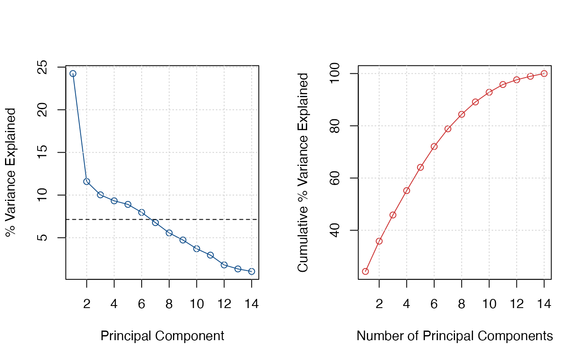
# I take 2 factors. Now number of lags
VARselect(IC_small$F_pca[, 1:2])
#> $selection
#> AIC(n) HQ(n) SC(n) FPE(n)
#> 8 3 3 8
#>
#> $criteria
#> 1 2 3 4 5 6
#> AIC(n) 0.4256375 0.2484074 -0.04114001 -0.04320722 -0.04321406 -0.04315230
#> HQ(n) 0.4565449 0.2999196 0.03097715 0.04951484 0.07011289 0.09077955
#> SC(n) 0.5027285 0.3768924 0.13873901 0.18806580 0.23945295 0.29090872
#> FPE(n) 1.5305683 1.2819914 0.95971392 0.95775358 0.95778063 0.95788815
#> 7 8 9 10
#> AIC(n) -0.04217882 -0.04883749 -0.02908459 -0.03664317
#> HQ(n) 0.11235793 0.12630416 0.16666197 0.17970829
#> SC(n) 0.34327620 0.38801154 0.45915845 0.50299387
#> FPE(n) 0.95888700 0.95260885 0.97172323 0.96454159
#>
# Estimating the model with 2 factors and 3 lags
dfm_small = DFM(BM14[, BM14_Models$small], 2, 3, em.method = "BM")
#> Converged after 26 iterations.
# Inspecting the model
summary(dfm_small)
#> Dynamic Factor Model: n = 14, T = 356, r = 2, p = 3, %NA = 38.3628
#>
#> Call: DFM(X = BM14[, BM14_Models$small], r = 2, p = 3, em.method = "BM")
#>
#> Summary Statistics of Factors [F]
#> N Mean Median SD Min Max
#> f1 356 -0.0777 0.1544 2.0324 -8.9693 3.2519
#> f2 356 0.0468 -0.0279 1.3933 -4.2683 5.8201
#>
#> Factor Transition Matrix [A]
#> L1.f1 L1.f2 L2.f1 L2.f2 L3.f1 L3.f2
#> f1 1.2107 -0.1290 -0.06743 0.1059 -0.2065 0.008175
#> f2 0.3656 0.4819 0.10274 -0.2022 -0.6789 0.391439
#>
#> Factor Covariance Matrix [cov(F)]
#> f1 f2
#> f1 4.1307 -0.4890*
#> f2 -0.4890* 1.9412
#>
#> Factor Transition Error Covariance Matrix [Q]
#> u1 u2
#> u1 0.2845 0.2434
#> u2 0.2434 0.4387
#>
#> Observation Matrix [C]
#> f1 f2
#> ip_tot_cstr 0.2450 0.1850
#> new_cars 0.0245 0.0323
#> orders 0.1669 0.1692
#> ret_turnover_defl 0.0493 -0.0062
#> ecs_ec_sent_ind 0.2450 0.4559
#> pms_pmi 0.1196 0.4508
#> urx -0.3830 0.1478
#> extra_ea_trade_exp_val 0.0568 0.0847
#> euro325 0.1207 0.2317
#> raw_mat 0.0968 0.1707
#> gdp 0.3666 0.0236
#> empl 0.3661 -0.2945
#> capacity 0.2730 -0.1416
#> gdp_us 0.2194 0.1953
#>
#> Observation Error Covariance Matrix [diag(R) - Restricted]
#> ip_tot_cstr new_cars orders
#> 0.6374 0.9906 0.7938
#> ret_turnover_defl ecs_ec_sent_ind pms_pmi
#> 0.9863 0.3405 0.3814
#> urx extra_ea_trade_exp_val euro325
#> 0.1861 0.9708 0.8215
#> raw_mat gdp empl
#> 0.9028 0.4079 0.1488
#> capacity gdp_us
#> 0.5644 0.7362
#>
#> Observation Residual Covariance Matrix [cov(resid(DFM))]
#> ip_tot_cstr new_cars orders ret_turnover_defl
#> ip_tot_cstr 0.6126 -0.0151 0.1996* -0.0168
#> new_cars -0.0151 0.9943 -0.0077 0.1269*
#> orders 0.1996* -0.0077 0.7827 0.0342
#> ret_turnover_defl -0.0168 0.1269* 0.0342 0.9885
#> ecs_ec_sent_ind -0.0074 -0.0312 -0.0863* -0.0018
#> pms_pmi -0.0591 -0.0482 -0.0184 0.0068
#> urx 0.0104 -0.0190 0.0524 -0.0095
#> extra_ea_trade_exp_val 0.0737 0.0962 0.0760 -0.0145
#> euro325 -0.0294 0.0543 -0.0896 0.0140
#> raw_mat 0.0936 0.1054 0.0054 0.0392
#> gdp -0.0178 -0.0432 -0.0163 0.0624
#> empl -0.0335 -0.0505 0.0229 0.0005
#> capacity -0.0503 -0.0134 -0.0238 -0.0375
#> gdp_us -0.1565* 0.0034 -0.0046 -0.0659
#> ecs_ec_sent_ind pms_pmi urx
#> ip_tot_cstr -0.0074 -0.0591 0.0104
#> new_cars -0.0312 -0.0482 -0.0190
#> orders -0.0863* -0.0184 0.0524
#> ret_turnover_defl -0.0018 0.0068 -0.0095
#> ecs_ec_sent_ind 0.2537 -0.0718* 0.0030
#> pms_pmi -0.0718* 0.3167 0.0291
#> urx 0.0030 0.0291 0.1653
#> extra_ea_trade_exp_val -0.0657* -0.0426 0.0045
#> euro325 -0.0290 -0.0365 0.0002
#> raw_mat -0.0451 0.0409 0.0336
#> gdp -0.0813* -0.0211 -0.0020
#> empl 0.0453* 0.0421 0.0066
#> capacity -0.0567 -0.0113 0.0380
#> gdp_us -0.1000* -0.0293 0.0423
#> extra_ea_trade_exp_val euro325 raw_mat gdp
#> ip_tot_cstr 0.0737 -0.0294 0.0936 -0.0178
#> new_cars 0.0962 0.0543 0.1054 -0.0432
#> orders 0.0760 -0.0896 0.0054 -0.0163
#> ret_turnover_defl -0.0145 0.0140 0.0392 0.0624
#> ecs_ec_sent_ind -0.0657* -0.0290 -0.0451 -0.0813*
#> pms_pmi -0.0426 -0.0365 0.0409 -0.0211
#> urx 0.0045 0.0002 0.0336 -0.0020
#> extra_ea_trade_exp_val 0.9693 0.0141 -0.0336 0.0744
#> euro325 0.0141 0.8026 0.0103 -0.0458
#> raw_mat -0.0336 0.0103 0.8897 -0.0561
#> gdp 0.0744 -0.0458 -0.0561 0.3798
#> empl -0.0301 0.0173 0.0022 -0.0311
#> capacity -0.0421 -0.0023 -0.2376* 0.1283*
#> gdp_us -0.0775 0.0616 -0.0399 0.0510
#> empl capacity gdp_us
#> ip_tot_cstr -0.0335 -0.0503 -0.1565*
#> new_cars -0.0505 -0.0134 0.0034
#> orders 0.0229 -0.0238 -0.0046
#> ret_turnover_defl 0.0005 -0.0375 -0.0659
#> ecs_ec_sent_ind 0.0453* -0.0567 -0.1000*
#> pms_pmi 0.0421 -0.0113 -0.0293
#> urx 0.0066 0.0380 0.0423
#> extra_ea_trade_exp_val -0.0301 -0.0421 -0.0775
#> euro325 0.0173 -0.0023 0.0616
#> raw_mat 0.0022 -0.2376* -0.0399
#> gdp -0.0311 0.1283* 0.0510
#> empl 0.1155 -0.0515* -0.0259
#> capacity -0.0515* 0.5558 0.1338*
#> gdp_us -0.0259 0.1338* 0.7093
#>
#> Residual AR(1) Serial Correlation
#> ip_tot_cstr new_cars orders
#> -0.37927 -0.40846 -0.41429
#> ret_turnover_defl ecs_ec_sent_ind pms_pmi
#> -0.49173 -0.12364 0.09490
#> urx extra_ea_trade_exp_val euro325
#> 0.01165 -0.52365 0.24452
#> raw_mat gdp empl
#> 0.26723 NA NA
#> capacity gdp_us
#> NA NA
#>
#> Goodness of Fit: R-Squared
#> ip_tot_cstr new_cars orders
#> 0.3874 0.0057 0.2173
#> ret_turnover_defl ecs_ec_sent_ind pms_pmi
#> 0.0115 0.7463 0.6833
#> urx extra_ea_trade_exp_val euro325
#> 0.8347 0.0307 0.1974
#> raw_mat gdp empl
#> 0.1103 0.6202 0.8845
#> capacity gdp_us
#> 0.4442 0.2907
#>
#> Summary of Individual R-Squared's
#> N Mean Median SD Min Max
#> 14 0.3903 0.3391 0.3146 0.0057 0.8845
plot(dfm_small) # Factors and data
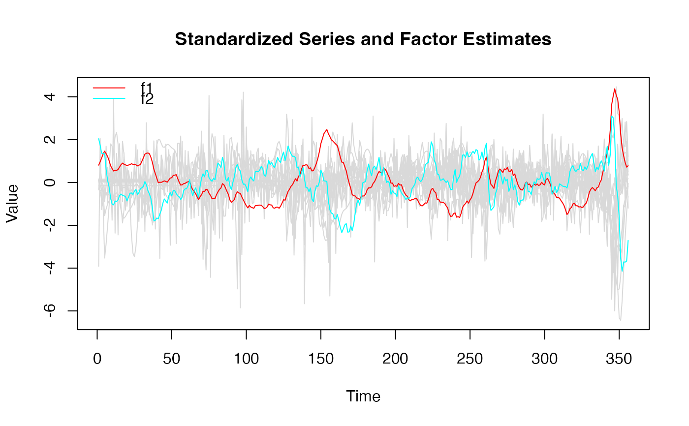
plot(dfm_small, method = "all", type = "individual") # Factor estimates
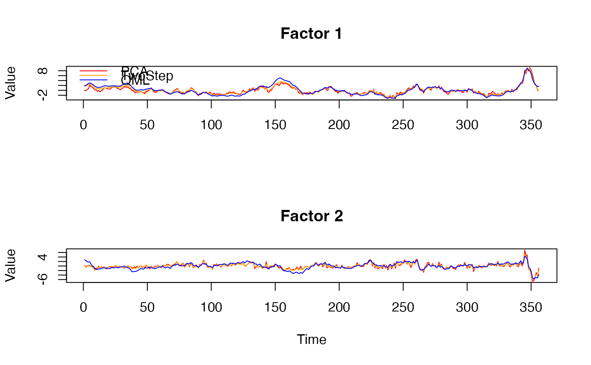
plot(dfm_small, type = "residual") # Residuals from factor predictions
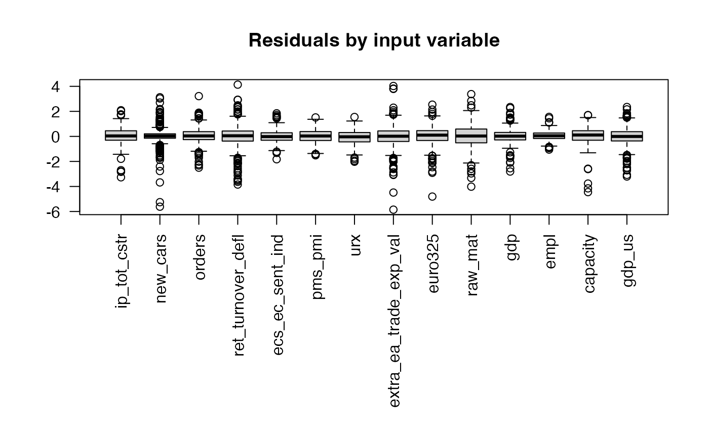
# 10 periods ahead forecast
plot(predict(dfm_small), xlim = c(300, 370))
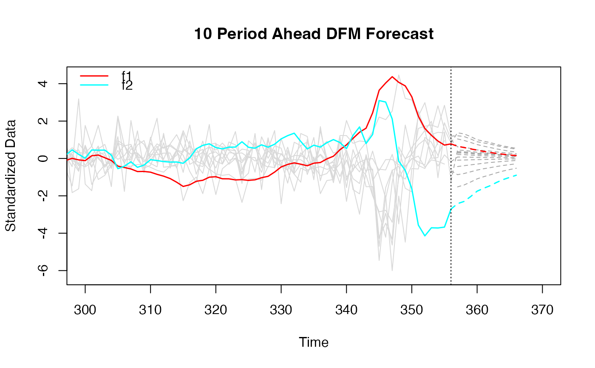
### Medium-Sized Model ---------------------------------
# IC for number of factors
IC_medium = ICr(BM14[, BM14_Models$medium])
#> Missing values detected: imputing data with tsremimpNA() with default settings
plot(IC_medium)
screeplot(IC_medium)
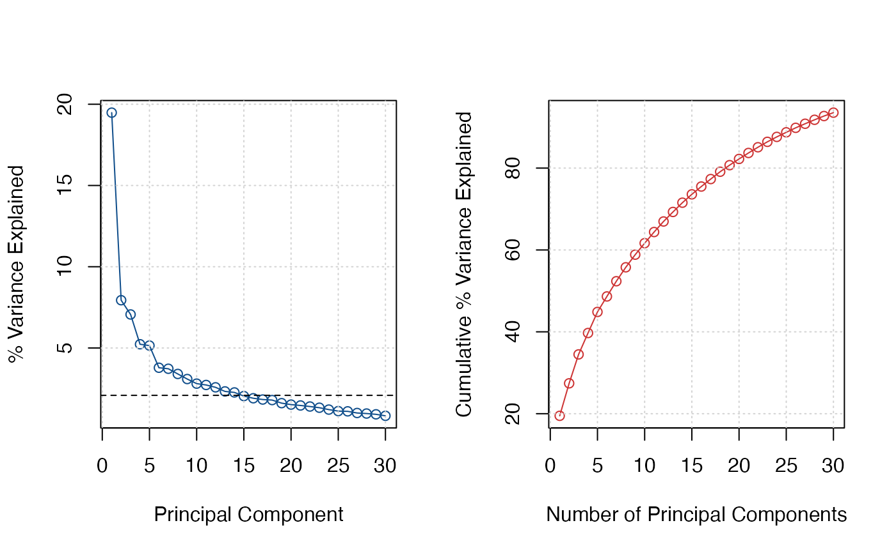
# I take 3 factors. Now number of lags
VARselect(IC_medium$F_pca[, 1:3])
#> $selection
#> AIC(n) HQ(n) SC(n) FPE(n)
#> 4 3 3 4
#>
#> $criteria
#> 1 2 3 4 5 6 7
#> AIC(n) 2.874215 2.729238 2.523782 2.494297 2.501059 2.512466 2.530814
#> HQ(n) 2.935865 2.837126 2.677908 2.694661 2.747660 2.805305 2.869890
#> SC(n) 3.028004 2.998369 2.908255 2.994112 3.116215 3.242964 3.376653
#> FPE(n) 17.711606 15.321660 12.476772 12.115522 12.199726 12.342648 12.575329
#> 8 9 10
#> AIC(n) 2.536151 2.519114 2.547360
#> HQ(n) 2.921464 2.950665 3.025149
#> SC(n) 3.497332 3.595637 3.739225
#> FPE(n) 12.648100 12.441299 12.806492
#>
# Estimating the model with 3 factors and 3 lags
dfm_medium = DFM(BM14[, BM14_Models$medium], 3, 3, em.method = "BM")
#> Converged after 26 iterations.
# Inspecting the model
summary(dfm_medium)
#> Dynamic Factor Model: n = 48, T = 356, r = 3, p = 3, %NA = 32.6135
#>
#> Call: DFM(X = BM14[, BM14_Models$medium], r = 3, p = 3, em.method = "BM")
#>
#> Summary Statistics of Factors [F]
#> N Mean Median SD Min Max
#> f1 356 -0.0403 0.4214 2.9848 -17.3578 5.4713
#> f2 356 -0.0109 -0.2687 2.0526 -4.8352 8.2507
#> f3 356 -0.0274 -0.119 1.5727 -6.8234 4.0181
#>
#> Factor Transition Matrix [A]
#> L1.f1 L1.f2 L1.f3 L2.f1 L2.f2 L2.f3 L3.f1 L3.f2
#> f1 0.74619 0.08633 0.28267 0.06055 -0.045219 -0.1494 0.07457 0.05102
#> f2 -0.01289 0.40113 0.04716 -0.09857 0.104393 0.1231 -0.09578 0.24146
#> f3 0.14844 -0.06662 0.41315 -0.01687 -0.001667 -0.1762 -0.14472 0.15933
#> L3.f3
#> f1 0.06631
#> f2 -0.02438
#> f3 0.15381
#>
#> Factor Covariance Matrix [cov(F)]
#> f1 f2 f3
#> f1 8.9091 0.2889 0.2680
#> f2 0.2889 4.2132 0.0017
#> f3 0.2680 0.0017 2.4733
#>
#> Factor Transition Error Covariance Matrix [Q]
#> u1 u2 u3
#> u1 2.1176 1.1526 -0.3597
#> u2 1.1526 1.9879 -0.4395
#> u3 -0.3597 -0.4395 2.0555
#>
#> Summary of Individual R-Squared's
#> N Mean Median SD Min Max
#> 48 0.381 0.3489 0.2986 0.0073 0.9311
plot(dfm_medium) # Factors and data
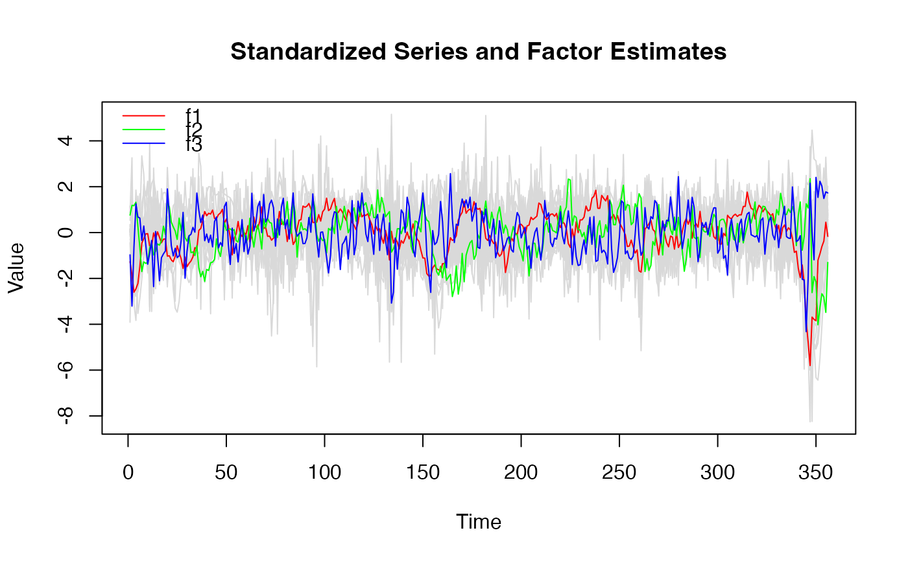
plot(dfm_medium, method = "all", type = "individual") # Factor estimates
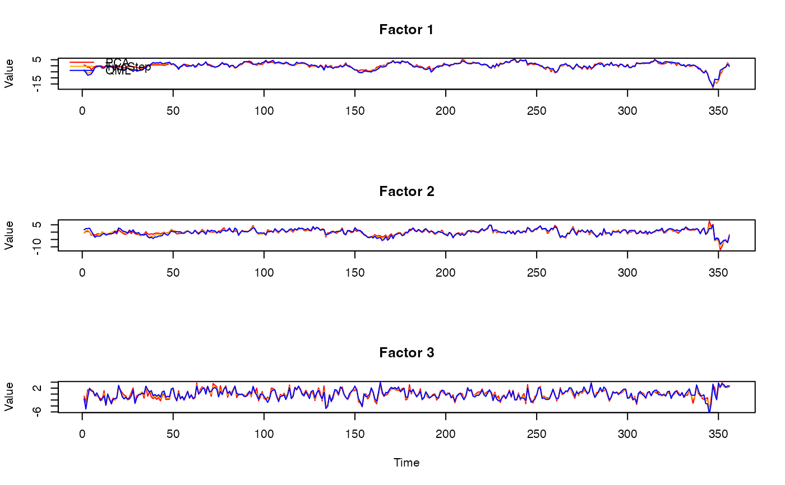
plot(dfm_medium, type = "residual") # Residuals from factor predictions
 # 10 periods ahead forecast
plot(predict(dfm_medium), xlim = c(300, 370))
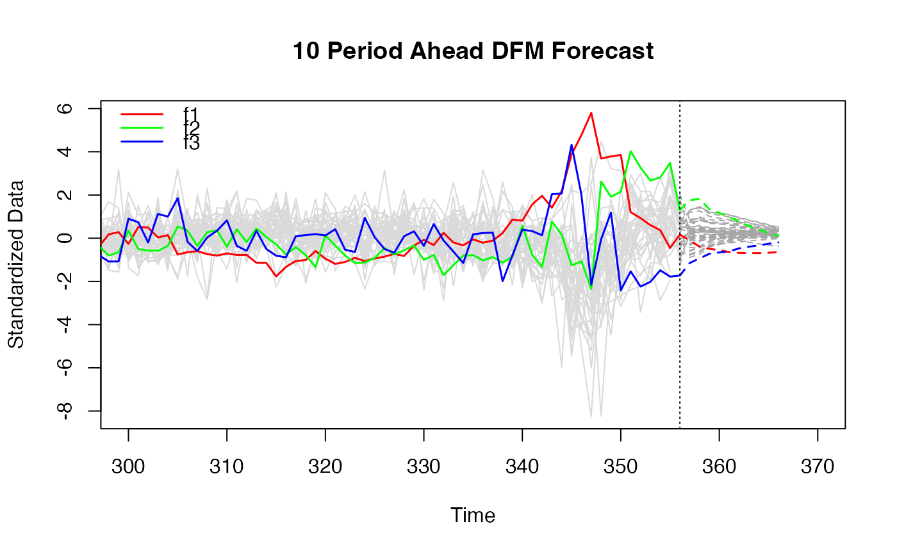
### Large Model ---------------------------------
# \donttest{
# IC for number of factors
IC_large = ICr(BM14)
#> Missing values detected: imputing data with tsremimpNA() with default settings
plot(IC_large)
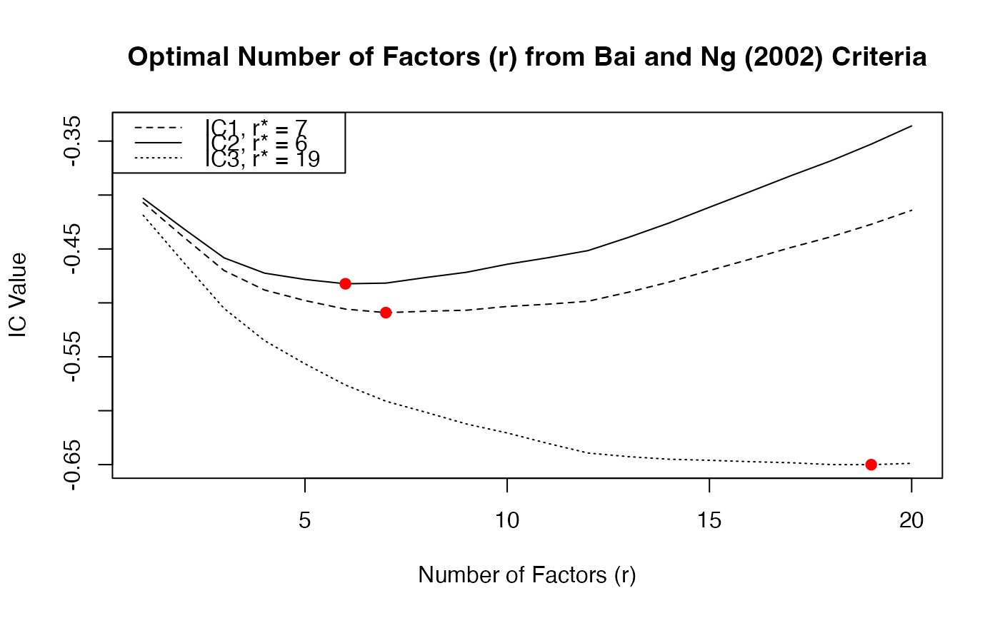
screeplot(IC_large)
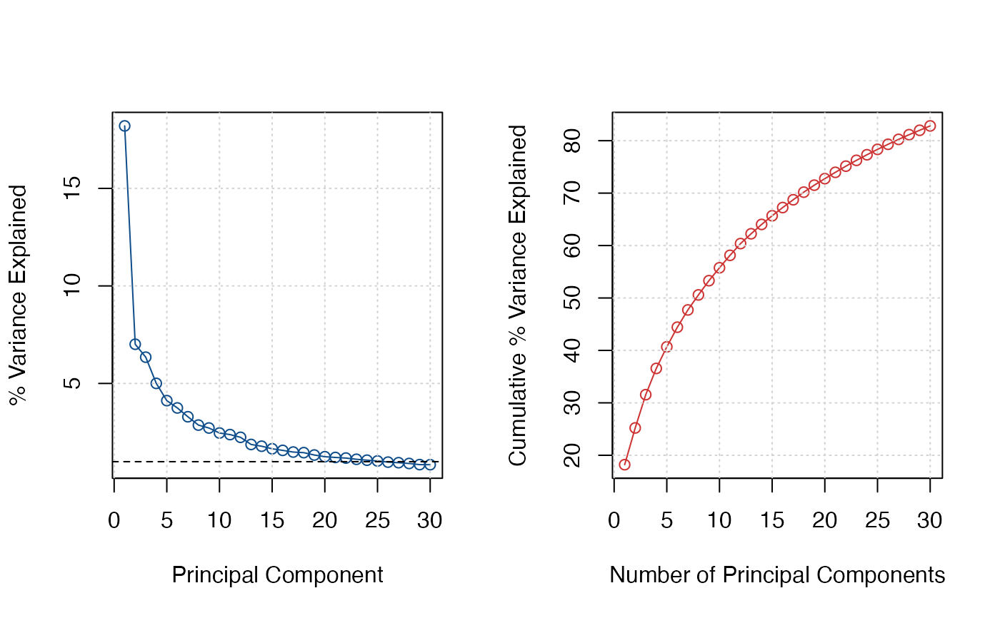
# I take 6 factors. Now number of lags
VARselect(IC_large$F_pca[, 1:6])
#> $selection
#> AIC(n) HQ(n) SC(n) FPE(n)
#> 4 2 1 4
#>
#> $criteria
#> 1 2 3 4 5 6
#> AIC(n) 7.643796 7.389709 7.231934 7.213175 7.227360 7.270454
#> HQ(n) 7.859572 7.790436 7.817610 7.983802 8.182938 8.410983
#> SC(n) 8.182058 8.389338 8.692929 9.135537 9.611090 10.115551
#> FPE(n) 2087.777732 1619.851010 1384.538269 1360.880208 1383.738670 1449.967094
#> 7 8 9 10
#> AIC(n) 7.379692 7.424074 7.542735 7.671673
#> HQ(n) 8.705171 8.934504 9.238116 9.552004
#> SC(n) 10.686156 11.191905 11.771933 12.362238
#> FPE(n) 1625.581824 1710.893843 1943.301686 2235.026114
#>
# Estimating the model with 6 factors and 3 lags
dfm_large = DFM(BM14, 6, 3, em.method = "BM")
#> Converged after 42 iterations.
# Inspecting the model
summary(dfm_large)
#> Dynamic Factor Model: n = 101, T = 356, r = 6, p = 3, %NA = 29.7363
#>
#> Call: DFM(X = BM14, r = 6, p = 3, em.method = "BM")
#>
#> Summary Statistics of Factors [F]
#> N Mean Median SD Min Max
#> f1 356 -0.0128 0.6589 4.8593 -22.6273 12.1396
#> f2 356 -0.1426 0.1953 3.2924 -13.4553 17.0049
#> f3 356 -0.0121 0.0539 2.6158 -10.0501 7.645
#> f4 356 0.0532 0.227 3.0551 -17.2138 10.345
#> f5 356 -0.0526 -0.0474 2.6591 -10.8706 11.5097
#> f6 356 -0.0074 -0.0276 2.3392 -8.0883 15.4214
#>
#> Factor Transition Matrix [A]
#> L1.f1 L1.f2 L1.f3 L1.f4 L1.f5 L1.f6 L2.f1 L2.f2
#> f1 0.4892 -0.27413 0.555373 -0.49350 0.33904 -0.10227 -0.10721 0.04923
#> f2 -0.1409 0.42355 -0.119072 -0.09760 0.11595 0.14366 0.19016 -0.06640
#> f3 0.2769 0.06985 0.394982 0.10002 -0.12723 -0.11881 -0.20734 0.04944
#> f4 -0.2432 -0.03345 0.085401 -0.18619 0.52093 -0.04263 0.01735 -0.17177
#> f5 0.2858 0.01547 -0.008841 0.40969 0.07289 0.01797 -0.01169 0.16386
#> f6 -0.2178 0.12874 -0.113025 -0.03033 -0.09462 0.40510 0.10945 -0.09195
#> L2.f3 L2.f4 L2.f5 L2.f6 L3.f1 L3.f2 L3.f3 L3.f4
#> f1 -0.23156 -0.14988 -0.06505 0.50861 0.367040 -0.11658 0.070419 0.008798
#> f2 0.07793 -0.07484 0.21098 -0.19913 0.091421 0.22904 0.008526 -0.142987
#> f3 -0.32524 0.23108 -0.07323 0.10170 -0.004843 -0.10569 0.186417 0.121418
#> f4 0.08269 -0.19694 0.05137 0.11849 0.054295 -0.13206 -0.029156 0.100593
#> f5 -0.12568 -0.01248 -0.15211 -0.01158 -0.145431 0.01864 0.038644 0.038082
#> f6 0.11387 -0.08252 0.14040 -0.19996 0.015064 0.05480 0.060205 -0.111405
#> L3.f5 L3.f6
#> f1 0.13116 -0.02589
#> f2 0.02080 0.17876
#> f3 -0.12427 -0.03180
#> f4 -0.05662 0.06638
#> f5 0.02519 -0.18284
#> f6 0.05736 0.10027
#>
#> Factor Covariance Matrix [cov(F)]
#> f1 f2 f3 f4 f5 f6
#> f1 23.6126 -0.2329 0.1166 4.0970* -2.4727* -2.8984*
#> f2 -0.2329 10.8399 -1.8458* 0.6389 -1.1282* 2.1751*
#> f3 0.1166 -1.8458* 6.8426 -1.6781* 1.6056* -1.2712*
#> f4 4.0970* 0.6389 -1.6781* 9.3339 -4.2441* -0.0480
#> f5 -2.4727* -1.1282* 1.6056* -4.2441* 7.0708 -0.6045
#> f6 -2.8984* 2.1751* -1.2712* -0.0480 -0.6045 5.4720
#>
#> Factor Transition Error Covariance Matrix [Q]
#> u1 u2 u3 u4 u5 u6
#> u1 9.4291 -0.3199 -1.3015 2.2611 -2.0748 0.0669
#> u2 -0.3199 5.3107 0.0049 0.8209 -0.5604 -0.0135
#> u3 -1.3015 0.0049 4.3942 -0.5711 0.4848 0.0342
#> u4 2.2611 0.8209 -0.5711 4.8600 -1.6002 0.1788
#> u5 -2.0748 -0.5604 0.4848 -1.6002 4.4129 -0.0902
#> u6 0.0669 -0.0135 0.0342 0.1788 -0.0902 3.2699
#>
#> Summary of Individual R-Squared's
#> N Mean Median SD Min Max
#> 101 0.4677 0.4352 0.2929 0.0096 0.9984
plot(dfm_large) # Factors and data
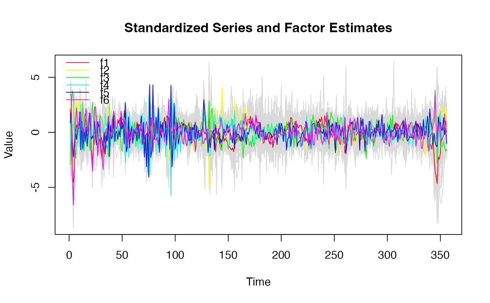
# plot(dfm_large, method = "all", type = "individual") # Factor estimates
plot(dfm_large, type = "residual") # Residuals from factor predictions
# 10 periods ahead forecast
plot(predict(dfm_large), xlim = c(300, 370))
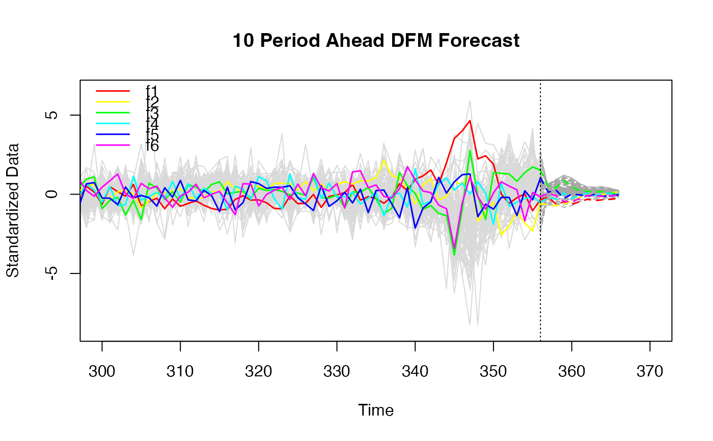
# }
# 10 periods ahead forecast
plot(predict(dfm_medium), xlim = c(300, 370))
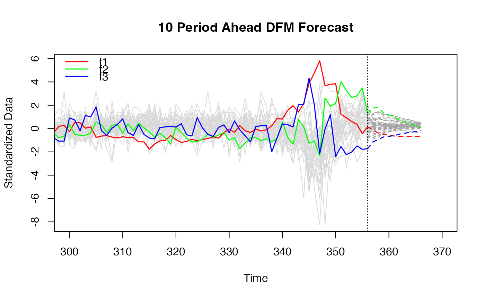
### Large Model ---------------------------------
# \donttest{
# IC for number of factors
IC_large = ICr(BM14)
#> Missing values detected: imputing data with tsremimpNA() with default settings
plot(IC_large)
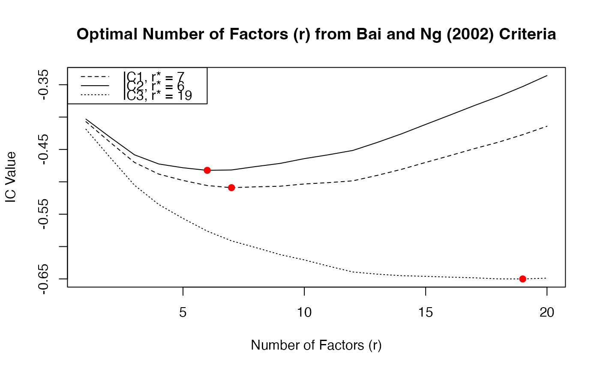
screeplot(IC_large)
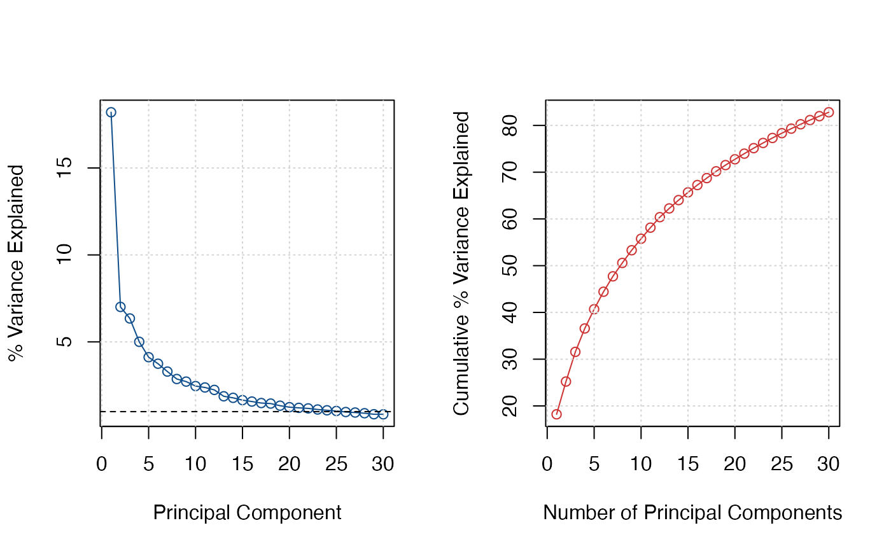
# I take 6 factors. Now number of lags
VARselect(IC_large$F_pca[, 1:6])
#> $selection
#> AIC(n) HQ(n) SC(n) FPE(n)
#> 4 2 1 4
#>
#> $criteria
#> 1 2 3 4 5 6
#> AIC(n) 7.643796 7.389709 7.231934 7.213175 7.227360 7.270454
#> HQ(n) 7.859572 7.790436 7.817610 7.983802 8.182938 8.410983
#> SC(n) 8.182058 8.389338 8.692929 9.135537 9.611090 10.115551
#> FPE(n) 2087.777732 1619.851010 1384.538269 1360.880208 1383.738670 1449.967094
#> 7 8 9 10
#> AIC(n) 7.379692 7.424074 7.542735 7.671673
#> HQ(n) 8.705171 8.934504 9.238116 9.552004
#> SC(n) 10.686156 11.191905 11.771933 12.362238
#> FPE(n) 1625.581824 1710.893843 1943.301686 2235.026114
#>
# Estimating the model with 6 factors and 3 lags
dfm_large = DFM(BM14, 6, 3, em.method = "BM")
#> Converged after 42 iterations.
# Inspecting the model
summary(dfm_large)
#> Dynamic Factor Model: n = 101, T = 356, r = 6, p = 3, %NA = 29.7363
#>
#> Call: DFM(X = BM14, r = 6, p = 3, em.method = "BM")
#>
#> Summary Statistics of Factors [F]
#> N Mean Median SD Min Max
#> f1 356 -0.0128 0.6589 4.8593 -22.6273 12.1396
#> f2 356 -0.1426 0.1953 3.2924 -13.4553 17.0049
#> f3 356 -0.0121 0.0539 2.6158 -10.0501 7.645
#> f4 356 0.0532 0.227 3.0551 -17.2138 10.345
#> f5 356 -0.0526 -0.0474 2.6591 -10.8706 11.5097
#> f6 356 -0.0074 -0.0276 2.3392 -8.0883 15.4214
#>
#> Factor Transition Matrix [A]
#> L1.f1 L1.f2 L1.f3 L1.f4 L1.f5 L1.f6 L2.f1 L2.f2
#> f1 0.4892 -0.27413 0.555373 -0.49350 0.33904 -0.10227 -0.10721 0.04923
#> f2 -0.1409 0.42355 -0.119072 -0.09760 0.11595 0.14366 0.19016 -0.06640
#> f3 0.2769 0.06985 0.394982 0.10002 -0.12723 -0.11881 -0.20734 0.04944
#> f4 -0.2432 -0.03345 0.085401 -0.18619 0.52093 -0.04263 0.01735 -0.17177
#> f5 0.2858 0.01547 -0.008841 0.40969 0.07289 0.01797 -0.01169 0.16386
#> f6 -0.2178 0.12874 -0.113025 -0.03033 -0.09462 0.40510 0.10945 -0.09195
#> L2.f3 L2.f4 L2.f5 L2.f6 L3.f1 L3.f2 L3.f3 L3.f4
#> f1 -0.23156 -0.14988 -0.06505 0.50861 0.367040 -0.11658 0.070419 0.008798
#> f2 0.07793 -0.07484 0.21098 -0.19913 0.091421 0.22904 0.008526 -0.142987
#> f3 -0.32524 0.23108 -0.07323 0.10170 -0.004843 -0.10569 0.186417 0.121418
#> f4 0.08269 -0.19694 0.05137 0.11849 0.054295 -0.13206 -0.029156 0.100593
#> f5 -0.12568 -0.01248 -0.15211 -0.01158 -0.145431 0.01864 0.038644 0.038082
#> f6 0.11387 -0.08252 0.14040 -0.19996 0.015064 0.05480 0.060205 -0.111405
#> L3.f5 L3.f6
#> f1 0.13116 -0.02589
#> f2 0.02080 0.17876
#> f3 -0.12427 -0.03180
#> f4 -0.05662 0.06638
#> f5 0.02519 -0.18284
#> f6 0.05736 0.10027
#>
#> Factor Covariance Matrix [cov(F)]
#> f1 f2 f3 f4 f5 f6
#> f1 23.6126 -0.2329 0.1166 4.0970* -2.4727* -2.8984*
#> f2 -0.2329 10.8399 -1.8458* 0.6389 -1.1282* 2.1751*
#> f3 0.1166 -1.8458* 6.8426 -1.6781* 1.6056* -1.2712*
#> f4 4.0970* 0.6389 -1.6781* 9.3339 -4.2441* -0.0480
#> f5 -2.4727* -1.1282* 1.6056* -4.2441* 7.0708 -0.6045
#> f6 -2.8984* 2.1751* -1.2712* -0.0480 -0.6045 5.4720
#>
#> Factor Transition Error Covariance Matrix [Q]
#> u1 u2 u3 u4 u5 u6
#> u1 9.4291 -0.3199 -1.3015 2.2611 -2.0748 0.0669
#> u2 -0.3199 5.3107 0.0049 0.8209 -0.5604 -0.0135
#> u3 -1.3015 0.0049 4.3942 -0.5711 0.4848 0.0342
#> u4 2.2611 0.8209 -0.5711 4.8600 -1.6002 0.1788
#> u5 -2.0748 -0.5604 0.4848 -1.6002 4.4129 -0.0902
#> u6 0.0669 -0.0135 0.0342 0.1788 -0.0902 3.2699
#>
#> Summary of Individual R-Squared's
#> N Mean Median SD Min Max
#> 101 0.4677 0.4352 0.2929 0.0096 0.9984
plot(dfm_large) # Factors and data
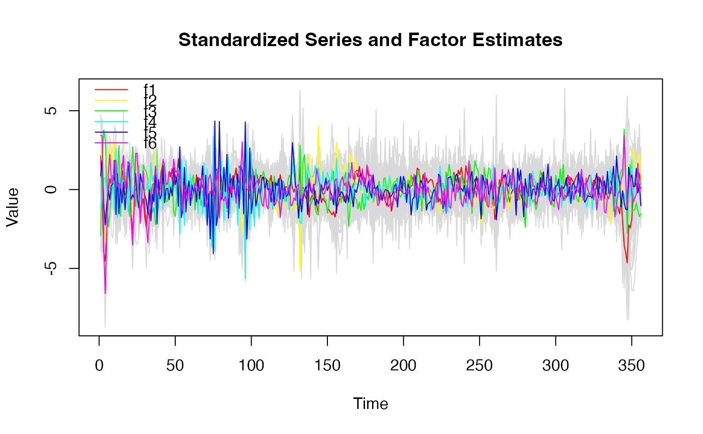
# plot(dfm_large, method = "all", type = "individual") # Factor estimates
plot(dfm_large, type = "residual") # Residuals from factor predictions
# 10 periods ahead forecast
plot(predict(dfm_large), xlim = c(300, 370))
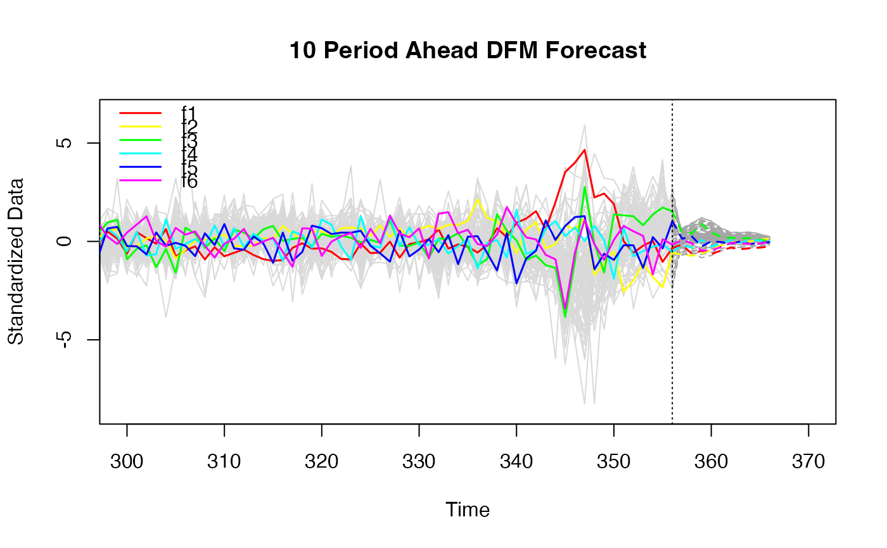
# }